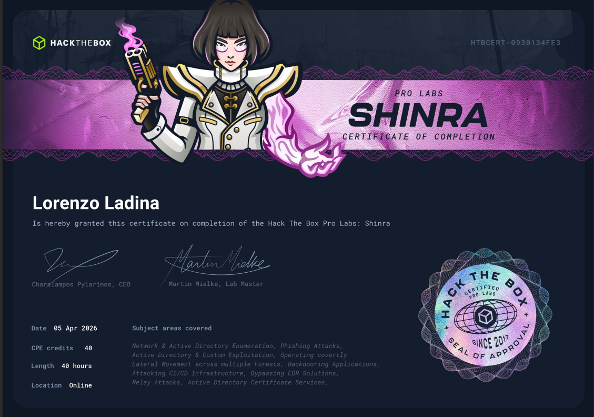
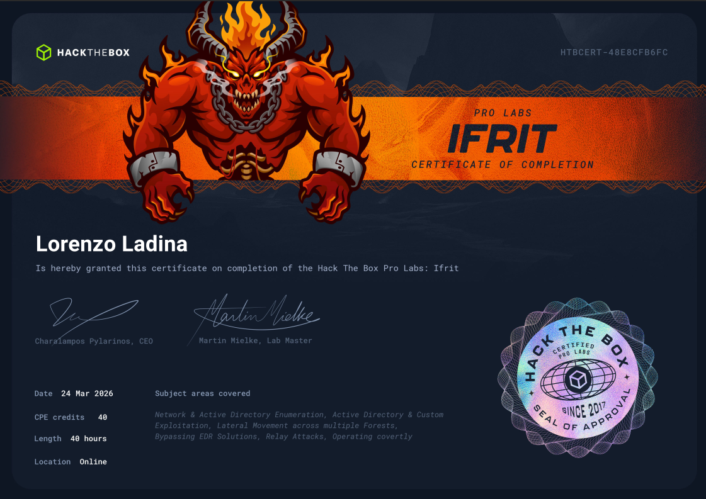
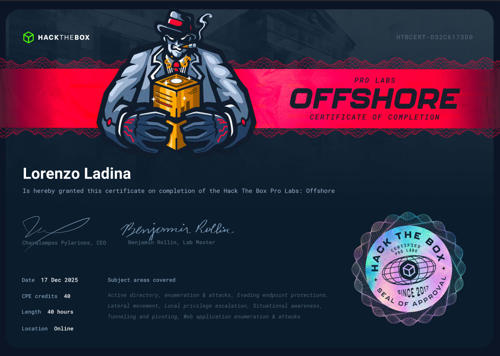
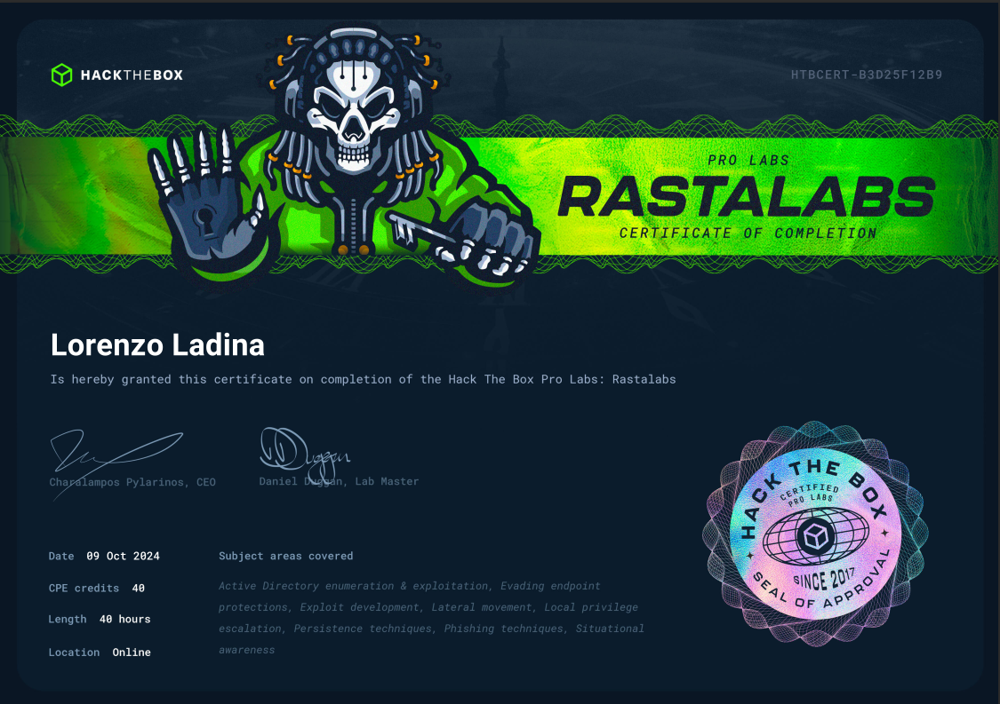
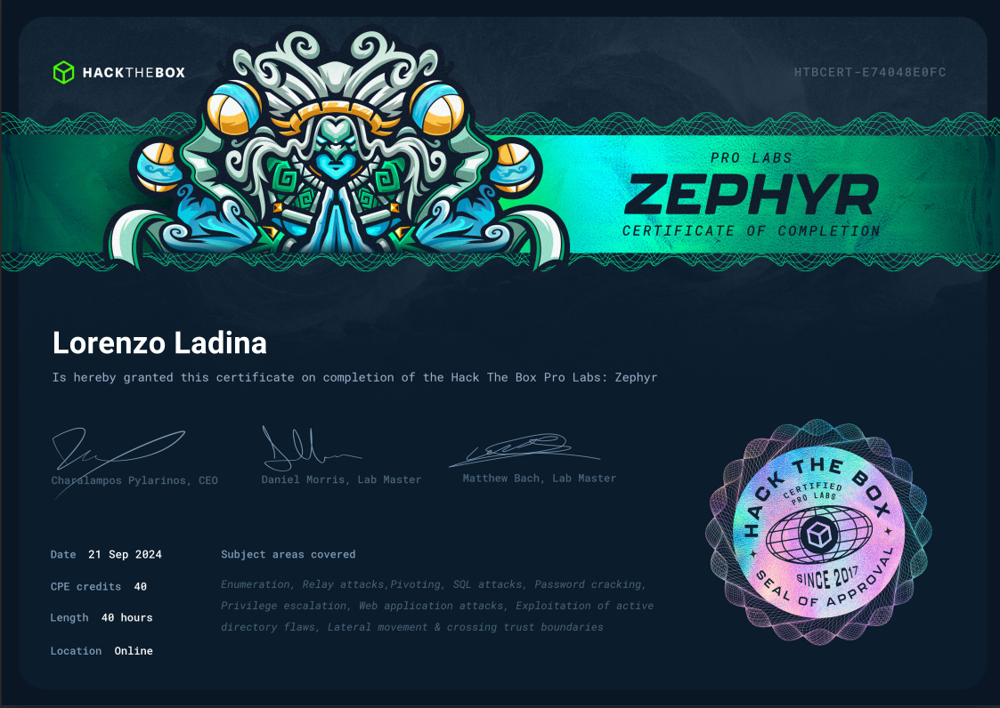
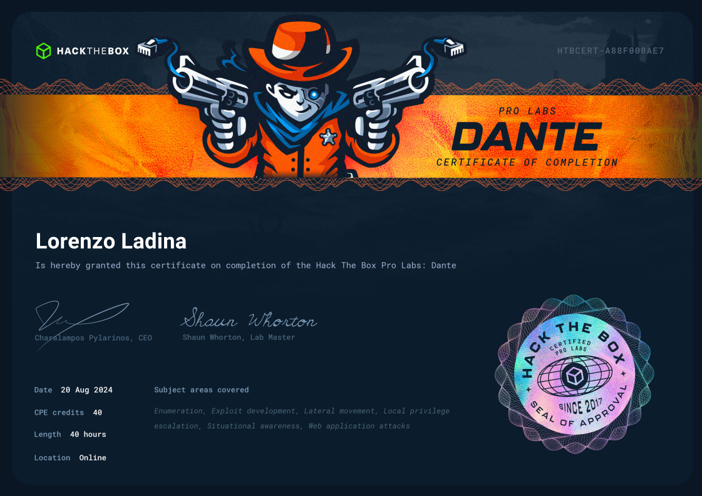

Skills & Expertise
My main skills focus on attacking Active Directory environments, Red Team operations, and advanced privilege escalation techniques. I’ve developed these skills through real-world work experience, combined with continuous practice on Hack The Box labs, which helped me build a practical and creative approach to exploiting vulnerabilities and bypassing defenses.
Alongside infrastructure work, I also have solid experience in web application testing. This lets me work across both web apps and internal systems, giving me a broader view of an organization’s attack surface.
Certifications
Master's Thesis
Autonomous LLM-based Penetration Testing Orchestrator
My thesis focuses on developing an advanced, autonomous LLM-based orchestrator designed to execute complex cybersecurity tasks using tools such as Nmap and BloodHound. To overcome major Generative AI limitations, such as high API costs and context window overflow, I engineered a "semantic compression layer". This system parses verbose tool outputs and provides the AI only with essential data, significantly reducing token consumption and preventing the model from losing focus on the correct attack paths.
Additionally, I integrated a dynamic memory management system that tracks recent commands and errors. This allows the model to learn from its mistakes, adapt its strategy, and avoid getting stuck in repetitive loops.
The effectiveness of these architectural choices was empirically validated through rigorous ablation studies and cross-model comparisons across 200 test runs. The results demonstrate that these optimizations are essential to prevent goal failure and excessive token consumption. Finally, I prioritized AI safety by testing the system’s resilience against prompt injection attacks, showing how specific prompt structures can protect the autonomous agent from manipulation by malicious inputs hidden in target files.
Education
Master of Science in Computer Engineering
Bachelor of Science in Computer Engineering
Pro Labs HTB





